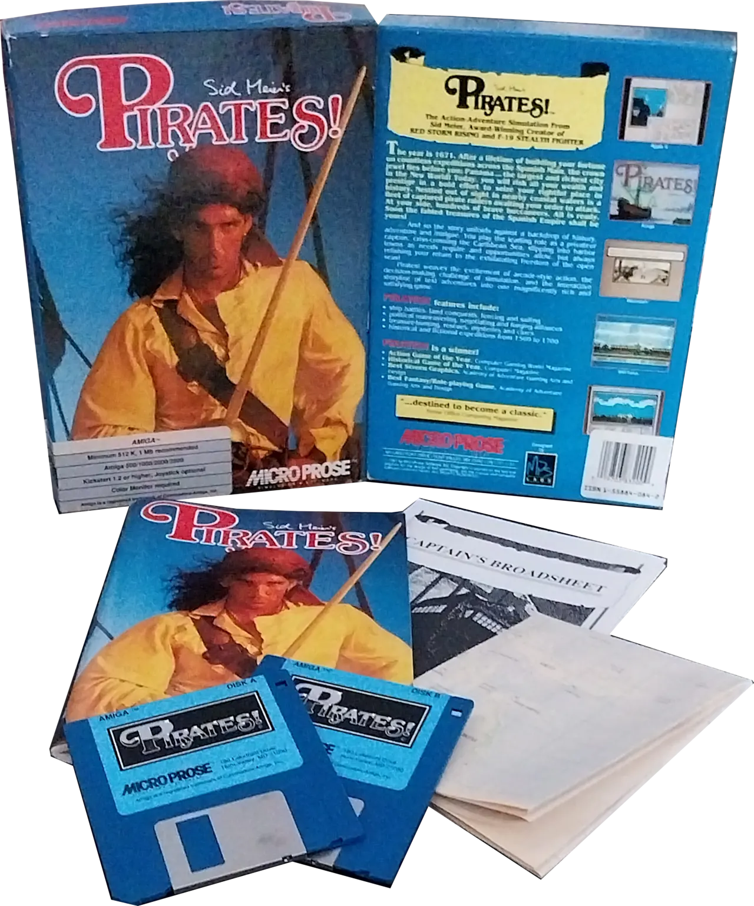
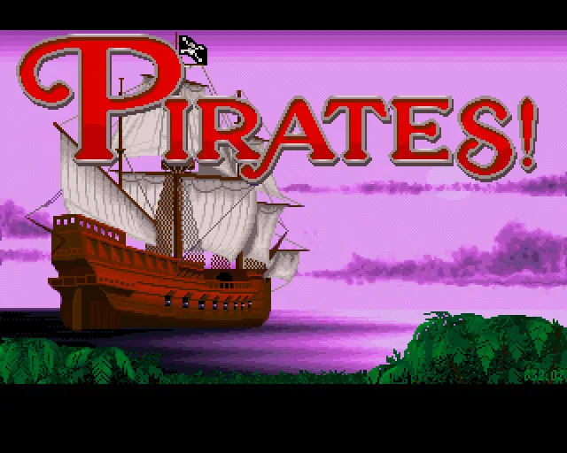
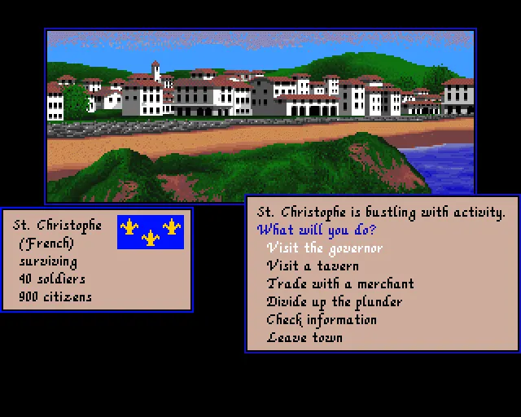
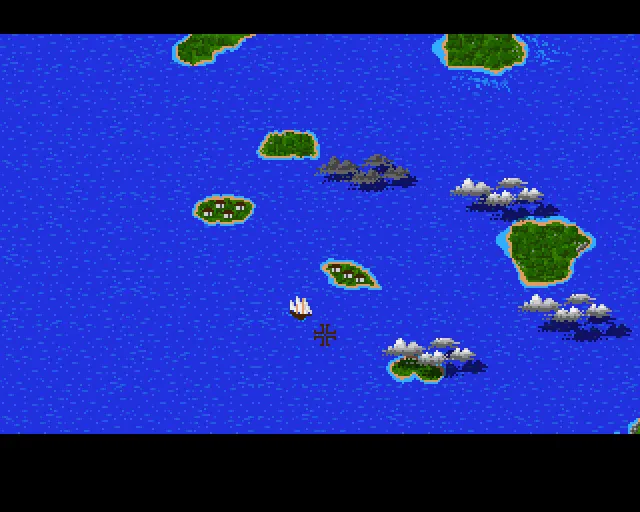

Entwickler: MicroProse
Publisher: MicroProse
Genre: Action / Strategie / Wirtschaftssimulation
Plattform: C64, Amiga, Apple II, Atari ST, DOS, u.a.
Erscheinungsjahr: 1987
In Sid Meier's Pirates! schlüpfst du in die Rolle eines Freibeuters in der Karibik des 17. Jahrhunderts. Du segelst zwischen den Kolonien der europäischen Großmächte, handelst Waren, kämpfst gegen feindliche Schiffe, suchst nach verborgenen Schätzen und jagst berüchtigte Piraten. Dabei entscheidest du selbst, ob du als gefürchteter Pirat oder angesehener Freibeuter in die Geschichte eingehst.




Sid Meier's Pirates! überzeugt bis heute durch seine enorme spielerische Freiheit. Jede Partie entwickelt sich anders und bietet eine gelungene Mischung aus Seeschlachten, Erkundung, Handel und Piratenromantik. Gerade diese Vielfalt macht den Titel auch Jahrzehnte nach seiner Veröffentlichung zu einem zeitlosen Klassiker.